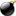

RSS Feed
To be kept informed as soon as a new version of BasKet Note Pads or WeBasKet is released, you can use BasKet Note Pads's RSS feed:
 http://basket.kde.org/basket.rss
http://basket.kde.org/basket.rss
A RSS feed is a small network resource that contains news from a site, a weblog, a project, etc.
You need a news aggregator to collect feeds.
An aggregator collects feeds so the news items are readable from a single place regardless of their source, and you can be notified as soon as a site is updated.
This saves you a lot of time because you won't have to visit all sites anymore. The aggregator collects them for you.
Add the RSS link above as a source to one of the following applications (depending on your desktop):
- aKregator
- This is the KDE news aggregator. It is the best one, and it is also well integrated with Konqueror;
- Straw
- The GNOME news aggregator;
- NetNewsWire
- NetNewsWire is an elegant MAC OS X aggregator, easy to use, and powerful;
- RSS Bandit
- Simple, beautiful and efficient, RSS Bandit is a free and full-featured aggregator for Windows.;
- Bloglines
- Bloglines is a WEB based aggregator. After subscribing, you will be able to read feeds from any computer, with any OS. It only needs a WEB browser.
You can also use one of the following alternatives:
- eventwatcher
- A KDE events daemon which can also display RSS feeds;
-  Super Karamba aggregators
- If you have Super Karamba installed (it allows you to display various information sources on your desktop), a lot of themes allow you to retreive RSS feeds;
- Mozilla Thunderbird
- This mail client can also manage RSS feeds in a nice way;
- Mozilla Firefox
- Version 1.0 of this WEB browser automatically searches for RSS feeds in pages, and allows you to display them as dynamic bookmarks;
- SharpReader
- This is a simple but efficient aggregator for Windows;
- FeedDeamon
- An aggregator for Windows with more features;
- NewzCrawler
- Another aggregator for Windows with more features.